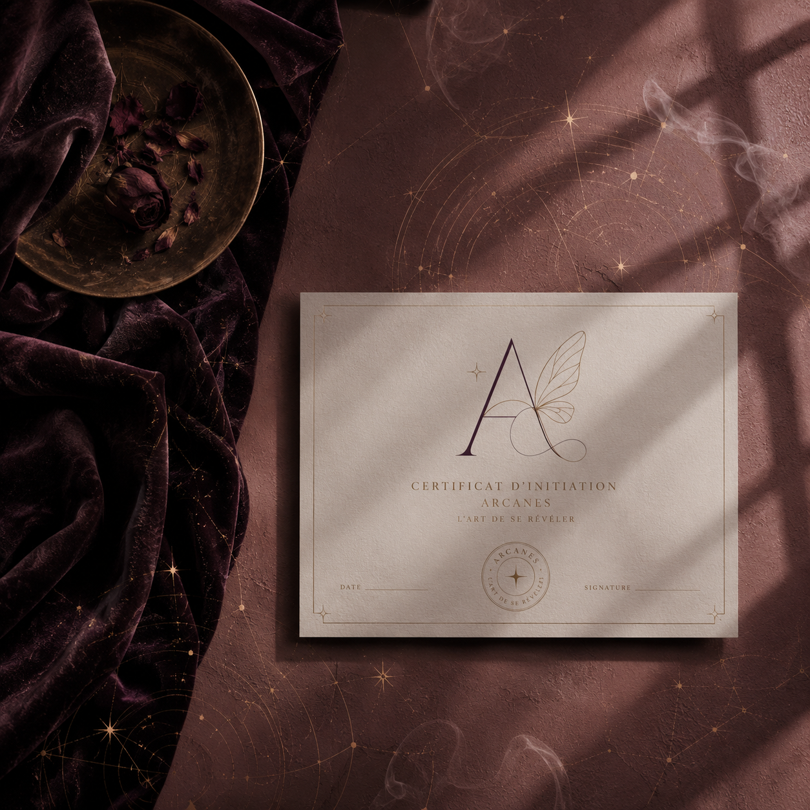
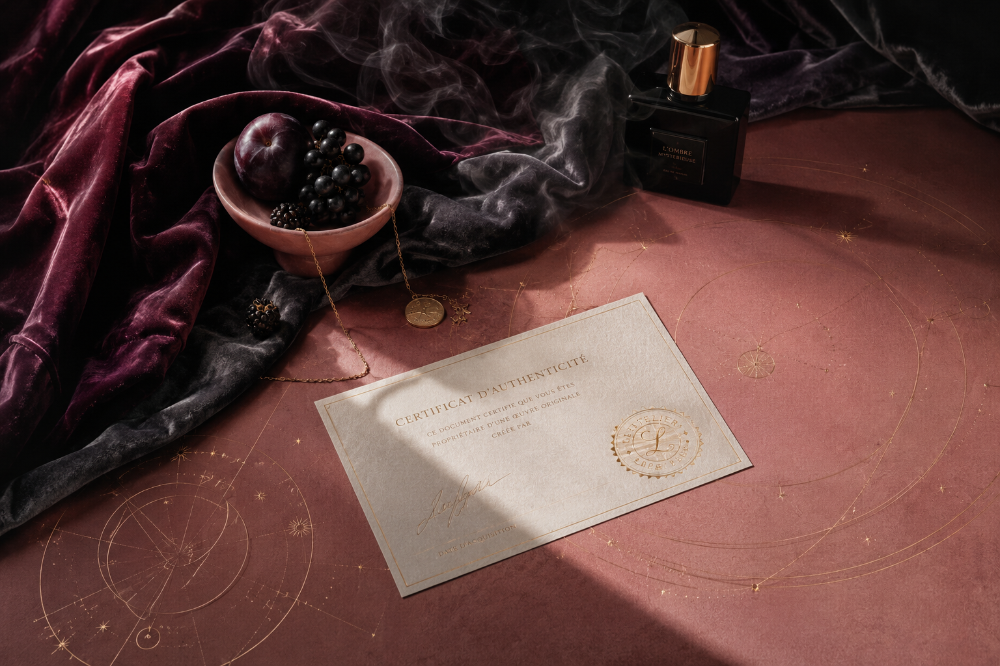

明明很努力，卻一直原地打轉。
chu鬧耶～
別再把人生玩成生存模式。
仙女辦事處 Arche Fairy
個人 IP｜仙女 @arche_Chu
一間研究人性、探索人生、協助凡間仙女優雅破關的現代哲學系心理陪伴機構。
我們不販售標準答案。
只陪你理解自己。
當你看懂自己的劇本，
人生就不只是命運。
而會開始成為選擇。

Problem / 荒謬現狀
妳的人生不是壞掉了，只是有些地方需要重新看懂。
有時候我們以為，是工作有問題，是關係有問題，是自己有問題。後來才發現，問題從來不是問題本身。而是我們一直用舊的方法，處理新的課題。
明明想自由，卻一直照顧別人的劇本。
明明渴望被理解，卻習慣先懷疑自己。
明明什麼都不缺，卻總覺得心裡空了一塊。
明明來體驗人生，卻活得像在交作業。

Brand Philosophy
HUMAN RESEARCH PROJECT人間觀察報告
生活很荒謬。
這大概是我研究人類之後，得到最誠實的結論。
有人努力了一輩子，卻始終不相信自己值得被愛。有人擁有了別人羨慕的一切，卻不知道自己為什麼不快樂。有人不斷追求答案，最後發現真正困住自己的，其實是不敢面對問題。
後來我發現，人真正的課題，從來不是外面的世界。而是如何理解自己。
於是這些年，我研究哲學、研究人性、研究情緒、研究潛意識，也研究那些藏在每個選擇背後，看不見的故事。
易經、催眠、原型、療癒、精油，都是工具。真正重要的，始終是人。
我不相信恐嚇式宿命論。也不販售毒性正能量。我不認為人生是一場等待被拯救的旅程。
我更相信，人生是一場高級沉浸式體驗。而我們來到這裡，不是為了活成標準答案。而是為了理解自己。
當一個人開始看懂自己，很多內耗會停止。很多執著會鬆開。很多命運，也會慢慢變成選擇。
仙女辦事處存在的原因，不是替你決定人生。而是陪你拿回人生主導權。
生活很荒謬。
仙女不內耗。
Service Rules
我們不提供什麼，也很重要。
我們不提供：
- 不替你決定人生
- 不保證前任回頭
- 不販售一夜開悟
- 不鼓勵逃避現實
- 不用恐嚇式宿命論嚇你
我們提供：
- 看懂自己的慣性劇本
- 理解情緒背後的訊號
- 找到真正卡住的原因
- 做出更清醒的選擇
- 拿回人生主導權